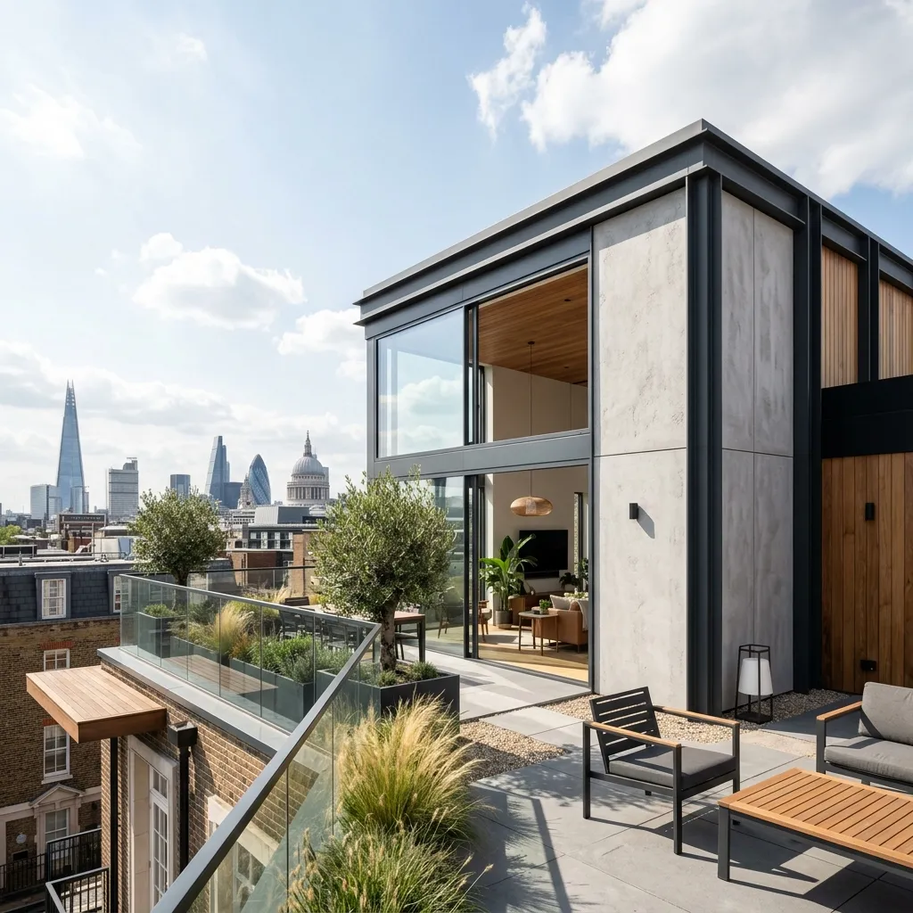
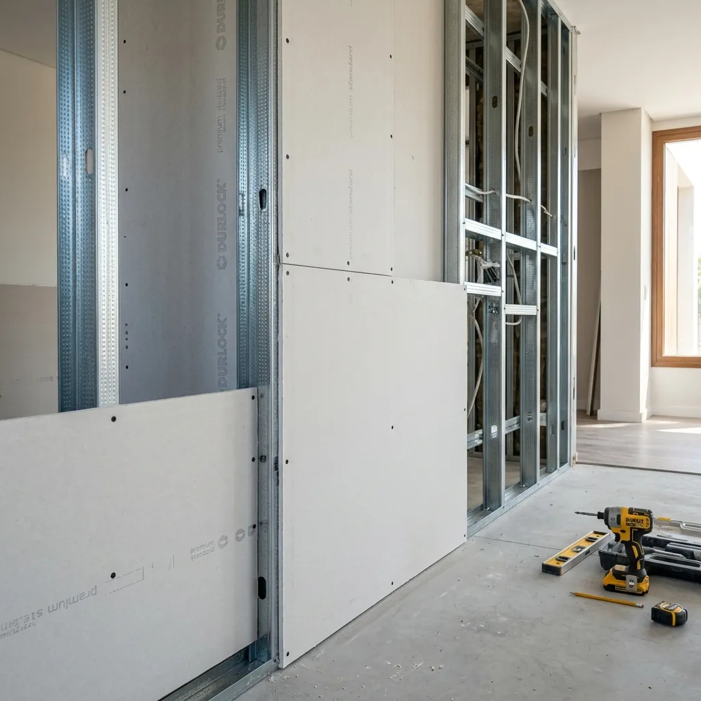

SISTEMA DE CONSTRUCCIÓN
EN SECO
La alternativa inteligente para remodelaciones rápidas, tabiques divisorios y ampliaciones de alta gama. Descubre precios, materiales y aplicaciones eficientes en Tucumán.
¿Qué es el Sistema de Construcción en Seco?
El Sistema de Construcción en Seco es un modelo tecnológico que prescinde de mezclas húmedas (cemento, cal, agua), reduciendo los tiempos de ejecución en un 70%. En Argentina, este concepto abarca desde la colocación de placas de yeso (comúnmente llamadas Durlock) para tabiquería interior y cielorrasos, hasta sistemas estructurales completos como el **Wood Framing** (marcos de madera) o el **Steel Framing** (perfiles de acero galvanizado pesado) bajo normas sismorresistentes CIRSOC.
Wood Framing (Madera)
Utiliza marcos de madera estructural como soporte principal. Es un sistema altamente sostenible, de excelente aislamiento natural y muy popular en regiones boscosas, requiriendo un riguroso tratamiento ignífugo y antihumedad.
Construcción con Placas (Durlock)
El estándar para refacciones interiores. Combina perfiles metálicos ligeros de chapa zincada con placas de roca de yeso. Ideal para tabiques divisorios termoacústicos y cielorrasos sin carga estructural.

Obra libre de escombros, con superficies listas para masillar, pintar o revestir.
Anatomía de la Construcción en Seco
Haz clic en cada capa para descubrir la ingeniería y los materiales que componen un muro termoacústico del sistema en seco.
Revestimiento Exterior (EIFS o Placas)
Para exteriores en la construcción en seco, se utilizan placas de cemento (Superboard), placas especiales de yeso reforzado o el sistema **EIFS** (Placa de EPS mas base coat con malla de fibra de vidrio). Esto garantiza 100% de estanqueidad, alta resistencia a impactos y al clima de Tucumán, con terminación en revoque plástico texturado.
Construcción en Seco Exterior e Interior
Construcción en Seco Exterior
Diseñada para soportar la intemperie, radiación UV y vientos. En fachadas y muros externos, se instalan placas cementicias o placas de yeso glass-faced (con velo de fibra de vidrio como Glassroc). Se complementa obligatoriamente con una barrera hidrófuga de viento y agua que previene filtraciones y condensaciones dañinas.
- done Placas Cementicias (Superboard de 8 a 10 mm)
- done Sistema EIFS (Aislación Térmica de EPS)
- done Barrera de Agua y Viento (Norma IRAM 1563)
Construcción en Seco Interior
Es el reino de la placa de roca de yeso (Durlock). Permite crear tabiquerías livianas, cielorrasos suspendidos y revestimientos termoacústicos. Existen diferentes tipos de placa adaptados a cada necesidad: estándar (gris), resistente a la humedad (verde - baños/cocinas) y resistente al fuego (roja).
- done Placas Estándar (ST) y Resistentes a Humedad (RH)
- done Estructuras con Montantes y Soleras galvanizadas de 35 o 69 mm
- done Aislación interna con Lana de Vidrio para control acústico
Ampliaciones y Proyectos Especiales
La ligereza estructural de la construcción en seco permite ejecutar proyectos inviables para el sistema tradicional.
Ampliación en Terrazas
Ideal para viviendas que desean expandirse en plantas superiores sin comprometer la cimentación existente. El sistema en seco pesa hasta 5 veces menos que el hormigón y ladrillo.
Viviendas de 2 Pisos
Ejecutamos viviendas completas de dos plantas con estructuras certificadas de Steel Framing, optimizando tiempos de entrega con total rigidez sismorresistente.
Dúplex en Seco
Para desarrollos e inversiones inmobiliarias donde la velocidad de retorno de capital es crucial. Reducción drástica en costos indirectos y financieros de obra.
Garajes y Cocheras
Estructuras de garage en steel framing o semi-cubiertas de líneas modernas de montaje ultra veloz y sin necesidad de grandes movimientos de tierra.
Precios por Metro Cuadrado de Construcción en Seco
Conoce los costos detallados por m² para planificar tu inversión con exactitud y evitar sorpresas típicas de la construcción tradicional húmeda. Los costos estimados por metro cuadrado se actualizan mensualmente tomando como referencia el Índice de la Cámara Argentina de la Construcción (CAC).
¿Qué influye en el costo m²?
- Calidad de placas y aislación termoacústica (densidad de lana de vidrio).
- Espesor de la estructura (perfiles estructurales vs montantes ligeros).
- Calidad final de las aberturas (DVH en ventanas) y revestimiento.
| Tipología de Obra | Obra Gris (USD/m²) | Llave en Mano Premium (USD/m²) |
|---|---|---|
| Vivienda Completa Steel Framing | USD 650 - USD 850 | USD 1.200 - USD 1.350 |
| Ampliaciones Exteriores (Terrazas) | USD 550 - USD 750 | USD 1.000 - USD 1.200 |
| Tabiquerías e Interiores (Durlock) | USD 50 - USD 70 | USD 80 - USD 120 |
| Cielorrasos Suspendidos | USD 40 - USD 55 | USD 70 - USD 95 |
Calculadora de Reformas en Seco
Estima el valor de tu proyecto en pocos clics y consúltanos para formalizar tu presupuesto.
Materiales premium y mano de obra profesional especializada en Tucumán.
Preguntas Frecuentes
Guías y Análisis Técnicos
Sistema Steel Framing
Descubre cómo funciona la composición por capas y la estructura metálica sismorresistente.
Steel vs Tradicional
Comparamos costos, tiempos de obra y aislamiento frente a la construcción tradicional con ladrillo.
Ventajas y Desventajas
Análisis honesto y detallado de los pros y contras de edificar en seco en el NOA.
Ahorro Energético
Descubre cómo reducir hasta un 60% el consumo de calefacción y refrigeración con aislamiento premium.
Construye tu Casa Completa en Steel Framing
Si tu objetivo es edificar una vivienda unifamiliar premium y sismorresistente con la mayor eficiencia energética, el sistema Steel Framing es la opción ideal para ti.